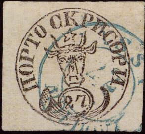
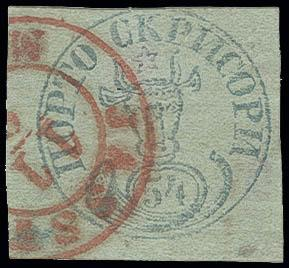
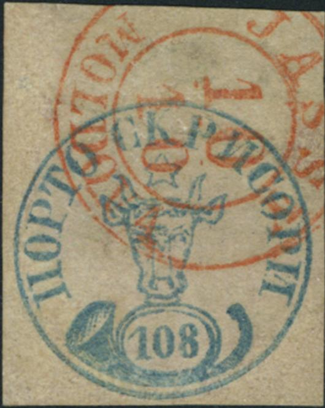
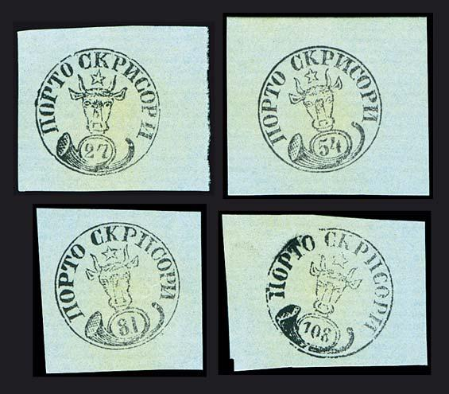
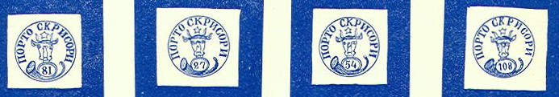

{kind=link}



Images reproduced with permission from: http://www.sandafayre.com
Rumania - Roumania - Roumanie - Rumänien
Return To Catalogue - Rumania 1858 first issue, forgeries, part 1 - Rumania 1858 first issue, forgeries, part 2- 1858 second issue - 1862 issue -1865 - 1866-1868 - 1869 - 1871- 1872-1903 - 1903-1920 - Cancels on the first issues - Miscellaneous
Note: on my website many of the
pictures can not be seen! They are of course present in the
catalogue;
contact me if you want to purchase it.
The most famous stamps of Romania are the famous “Bull’s Head” or "Cap de Bour" stamps of 1858. Actually, those stamps were issued by the Principality of Moldova (Moldavia). In 1859 Moldova was united with the Principality of Wallachia to form Romania. At that time Transylvania was still under Austro-Hungarian occupation. In 1916, Romania declared war against Germany and Austro-Hungary. After the war, Transylvania and Bucovina became part of Romania.
Before the Romanian postal administration was established (and a short period of time after that), Austrian, Russian, Greek, and French post offices existed in Romania. Austrian and French post offices used their own stamps. The last foreign post office in Romania was officially closed in 1869. Along the Danube River, the Austrian DDSG Company operated its own postal service, mostly for parcels rather than letters, and several stamps were issued. The railway hetween Constanta and Cernavoda was operated for a short period of time by a British company and also issued stamps (scarce, inscription 'LOCAL-POST D B S R Kustendje& Czernawoda', ). During WWI, part of Romania was occupied by German, Austrian, Bulgarian, and Turkish troops. Several sets of stamps were issued or overprinted. Genuine covers bearing these stamps are rare. At the end of WW1, Romanian troops administered Galitia (now in Ukraine) and several Austrian stamps were overprinted (these are rare on genuine cover).
In 1919, the Romanian city of Timisoara was under Serb and Romanian occupation, and Arad under French. Each administration issued its own stamps, the French ones being the rarest. Commercial covers bearing those issues are rare and seldom offered.

Images reproduced with permission from: http://www.sandafayre.com
 


All certified genuine stamps.
Images obtained from a Cherrystone auction.
A genuine stamp on cover, offered on an E-bay auction
27 p black 54 p blue 81 p blue 108 p blue
From the approximately 24,000 stamps issued, only 724 survived, with only 89 on cover. They are considered as one of the world’s rarities. Another source (http://www.rpsl.org.uk/moldavia/index.html) says that 778 stamps survived. The stamps were issued on 21 July 1858, but the first known date is 29 July 1858. The last known date of use is 31 October 1858. The stamps were hand-printed in sheets of 32 stamps (4 rows of 8 stamps).
Value of the stamps |
|||
vc = very common c = common * = not so common ** = uncommon |
*** = very uncommon R = rare RR = very rare RRR = extremely rare |
||
| Value | Unused | Used | Remarks |
| 27 p | RRR | RRR | 3691 stamps sold, still existing today: 14 unused,
178 used (http://www.rpsl.org.uk/moldavia/index.html) used for letters send less than 70 miles. The 27 p stamp was only discovered by collectors in 1868. |
| 54 p | RRR | RRR | 4772 stamps sold, still existing today: 25 unused,
290 used used for letters send less than 140 miles. |
| 81 p | RRR | RRR | 709 stamps sold, still existing today: 35 unused, 27
used used for heavier letters. |
| 108 p | RRR | RRR | 2584 stamps sold, still existing today: 20 unused,
189 used used for registered letters. |
For information concerning cancels on these stamps, click here.
The Bull’s Head issue was reprinted twice, and can easily be recognized, because they are printed on different papers than the originals.
In 1891 and later reprints were made according to: http://www.rpsl.org.uk/moldavia/index.html. The 1891 reprints were made by August Gorjan (director of the Rumanian Post) and are therefore called Gorjan reprints. They are in black on grey-blue paper (information obtained from the above mentioned website). Other black reprints on coloured paper exists and also colored reprints.
Gorjan reprint (see also http://www.romaniastamps.com/essays/)
A certain C.M.Moriou offered 'reprints' of these stamps, which later (1903) turned out to be forgeries (source: V.A.Tyler, 'Philatelic Forgers, their Lives and Works'). His name might have been misspelt by Tyler, in my opinion his correct name is 'Constantin M. Moroiu'. This Moroiu also has published a catalogue of Rumanian stamps: C.M.Moroiu; Timbres de Roumanie, Catalogue Generale. Bucharest, 1886 (26 pages, source: http://www.cse.psu.edu/~dheller/post/bib.html). See also http://www.federatia-filatelica.ro/pagini/history.htm.

The circle of genuine stamps has a diameter of 19 1/2 mm except for the 108 p which has a diameter of 20 mm (The forged stamps of all countries by J.Dorn). More on the idenfication of forgeries of the bull's issue can be found at: http://hem.passagen.se/utions/bull/truebull.htm. From Billigs grosses Handbuch der Fälschungen (Wien 1938) we can learn that for the genuine stamps the following characteristics should be met (see the above website for pictures of these characteristics):
For the 27 p black:
1. The top of the second "O" in
"PORTO" is thinner
2. The ends of the "C" in "CKPNCOPN" almost
touch each other, there are vertical lines at the end of this
"C"
3. Right horn of the bull points towards the foot of
"P", the right line of the horn is thicker
4. There are 3 lines on the nose, right line somewhat longer, it
does not touch the other lines
5. White dot or line in right hand side of posthorn
6. The "7" has an upward 'hook' at the bottom
7. The top of the "7" has a very long downwards
pointing line
8. In the left hand side of the horn (the ellipse) should be
black squares on a white background
9. The first "O" in "PORTO" should be open
10. The left ear should point towards the base of the
"T" of "PORTO"
11. There are square dots in the mouth of the posthorn.
There is a quite deceptive Fournier forgery that doesn't have the upward hook.

For the 54 p blue
(genuine)
1. The left horn should be curved and point
towards the empty space between the "O" and
"C"
2. The "C" of "CKPNCOPN" is almost closed as
in the 27 p.
3. Lower left leg of star above the bull's head should be
prolonged
4. Curved horn pointed towards right part of foot of
"P"
5. The rigth ear points towards second leg of the "N"
6. The outer circle is broken just below the left hand side of
the posthorn.
7. There should be dots inside the mouth of the posthorn and no
vertical or horizontal lines.
A deceptive Fournier forgery exists with the lower left part of the star not extending far enough.
Fournier forgeries as printed in 'The Fournier Album of
Philatelic Forgeries' (reduced sizes)
For the 81 p blue:
(genuine)
1. The left curved horn of the bull points to the
right hand side of the "O" of "PORTO"
2. The top-ray of the star points to the left foot of the
"K"
3. There is a black dot at the right hand side of the star
4. The right horn of the bull points to the "P" of
"CKPNCOPN"
5. The right ear of the bull starts with a horizontal line (at
the bottom of the ear to the right)
6. There is a line at the right hand side of the bull's nose (on
the nose)
7. The "1" of "81" has a 'hook' at the top
8. The "P" of "PORTO" is extended with a line at the
bottom
9. There is often a break in the left ear
10. About 10 rows of dots inside the mouth of the posthorn (and
no lines)
A Fournier forgery with almost all the characteristics of the genuine stamps exists. It doesn't have the extended line at the bottom of the "P" of "PORTO", and there seems to be a dot instead of a line at the right hand side of the bull's nose.
Fournier forgeries as printed in 'The Fournier Album of
Philatelic Forgeries' (reduced sizes)
And finally for the 108 p blue:
(genuine)
1. The star is open at the left top side
2. the "K" ends with a curved long foot
3. the first "C" of "CKPNCOPN" is almost
square at the bottom
4. Two lines forming an arrow point down at about one third of
the nose (seen from the top)
5. the "1" of "108" has a long foot at the
right hand side pointing slightly downwards
6. The left ear of the bull points towards the second
"O" of "PORTO"
7. About 8 horizontal rows of dots in the mouth of the posthorn
(and no lines)
A Fournier forgery exists, without the curved long foot at the 'K', and the left horn thicker than the right horn (from the bull's point of view).
Fournier forgeries as printed in 'The Fournier Album of
Philatelic Forgeries' (reduced sizes)

The following text was found in The Philatelic
Record June 1901, page 171, concerning a certain forger Anghel
Antonescu. This forger is also mentioned in Maple Leaves
15 (6), December 1974 as a stamp forger (I have no further
information):
"A Would-be Forger. The following charming order was,
according to the Revue Philatelique sent to a colour-printer and
die-sinker at Rouen. We take all the more pleasure in publishing
this highly - interesting correspondence, as it gives us the
opportunity of making known the name and address of the party in
question. Anghel Antonescu,
42, Cales Mosilor, Bucarest (Roumanie). " BUCAREST,
I5.iv.1901." Dear Sir,—Having seen your advertisement
in the Echo that you are a maker of cliches for postage stamps
and undertake colour-printing, I take the liberty to ask you
whether you can make forged postage stamps, because I could give
you an order for all the Roumanian stamps of 1858-1866, excepting
the 30 parale of 1862 and the 20 parale of 1865. I want 500 of
each value, i.e., of 11 sorts, 5,500 stamps in all. In replying
whether you can execute this order kindly state your price.
" Awaiting your answer,—I remain, Yours very truly,
Anghel Antonescu."
The street name should probably have been Calea Mosilor instead
of Cales Mosilor.
http://come.to/romaniastamps/ or http://www.romaniastamps.com/; an enormous amount of interesting data for the Romanian stamp collector.
http://hem.passagen.se/utions/bull/truebull.htm
http://membres.lycos.fr/dgrecu/DM1.html; Romania, A short postal history of Romania, by Dinu Matei, Calgary, Canada, First published in 'Calgary Philatelist', issue #29, April 1998, pp.3-7.
http://membres.lycos.fr/dgrecu/
Literature:
{kind=link}
{kind=link}